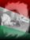

|
 | Megjártam már sok tüntetést és
mindig kicsit rossz szájízzel hallom, hogy megint van egy újabb. Ha valaki tüntet, akkor éppen azt
feltételezi, hogy egy normálisan mûködõ országban van, ahol érdekel bárkit is, hogy mit mond a
tömeg. Ehhez képest akár ezrek is gyûlhetnek a Parlament elõtt, arról hallgat a média (és ezért bûn,
hogy a nemzeti oldalnak nincsen profi és komolyan vehetõ sajtója, úgy egyáltalán), de tíz-húsz
környezetvédelmi aktivista miatt maga az államtitkár vesz át egy petíciót. Persze, a világ így
mûködik, otthonról talán még jól is mutat ez az egész színjáték.
Szóval nem tûnik számomra
túl vonzónak, hogy néhány száz vagy ezer ember között én is pont legyek, akit aztán nem vesznek
komolyan. De azt sem hiszem, hogy ezzel a tömeggel változtatni lehet, mert a forradalomtól nem jön
ide jobb világ, csak valamennyivel kevesebben lennénk. Attól még a pénz marad a világban az úr és
itthon sem lesz tehetségesebb a vezetõség, csak talán más.
Mindazonáltal sokat számít a
lelkeknek, hogy értük vagy velük sokan vannak. Néhányan még élhetnének is a tüntetésekbõl (és itt
nem a jó üzleti érzékkel kitelepülõ pattogatottkukorica-árusokra gondolok), hiszen a rendõr csak
rendõr marad, egy-egy jogosulatlan õrizetbe vétel után meg elvileg csurran-cseppen néhány forint
kártérítés. Legalábbis az ismerõsöm barátja hallott olyanról, akinek igen.
A tüntetéseket nem
így kellene felfognom. Vigye a fene azt a világmegváltós szándékot a jobbításról, meg az emberek
tájékoztatásáról! Élvezzük a dolgok szebb oldalát! Szebb jelent! A tüntetés remek szabadidõs
tevékenység, mint valami hobbi. A szabad levegõn baráti társasággal remek beszélgetésre és
bóklászásra van lehetõség, sõt most már látni néhány leányt is, velük is lehet ismerkedni. Egy
jópofa pólófelirat vagy tábla máris lehetõséget nyújt az ismerkedésre, mostanában pedig már kevesebb
a fekete férfipólót és bakancsot viselõ honleány, látni néhány valóban ékes példányát is a magyar
menyecskéknek.
Ezen felül pedig a sport szenvedélye is az utcára hívhatja a fiatalokat: a
rendõrök elõl futás, a flakonhajítás stb. mind remek kihívást jelenthetnek. Az extrém sportok és az
egyszerû kocogás kedvelõi is megtalálhatják a megfelelõ mozgáslehetõséget, valamint a férfias
adrenalinlöketeket is beszerezhetjük a mindennapos unalmas (és valljuk be azt is: értelmetlen)
robotolás mellett.
Tüntetni tehát jó móka is lehet, csak éppen arra nem jó, amit mondanak
róla. Mert azért nagyon unalmas és dagályos, és tényleg kevesen figyelnek arra, hogy mit mond el a szónok
egy közepesen tehetséges internetes naplóíró színvonalán. Csak az a néhány lelkes (és ittas) magyar
legény ne lenne!
Mindegy, hogy te is ott vagy, kapsz hideget-meleget, ha nem úgy nézel ki
(például véletlenségbõl göndör hajad van) vagy nem azt teszed (például véletlenségbõl neked a
magyarságtudat a futballpályánál vagy a kocsmánál továbbterjedve egész eszmerendszert és erkölcsi
világnézetet jelent), amit elvárnak. Nem nagyon zavarók õk, mert csak a hátad mögött hangoskodnak,
de jócskán megnehezítik, hogy élvezd az eseményt. Õk még néhány éve felháborodva kérdezték, miért
nem tesz semmit a tömegével ez vagy az a párt. Ma már õk is egy ilyen tömeg részei, de nem tesznek
semmit.
Persze, hogy nem, hiszen nem kaptak rá utasítást. De végül is mire utasíthatnád a
katonáid legrosszabbjait?
| | vissza a fõoldalra |  |
| 1 2 3 | |  | | | | | | | | | | | | 

|
| | | | | | | | | | 1 2 3 |  |
|


túraszervezõ
túra-rss
mi ez?

legjobbak
legolvasottabbak
tartalomjegyzék
rss feed

AboryM
Caesar
Count Grishnackh
cscsabi
eürdüngh
Feki
GyalogKakukk
Ishukone
Kadzseszka
LACI1993
Mini
Muska
Rommel
Segi
Takezó
tommylee
vikcee
|
BlogGép 1.1 (C) 2007-2009 tomcat
nem adom
hülye kérdések elott olvasd el a faq-t
minden, a bombagyar.hu-n és aloldalain közölt tartalom újraközléséhez
a szerkesztõk írásos beleegyezése szükséges
az olvasói kommentárok és levelek nem feltétlenül a szerkesztõk véleményét tükrözik
házirend elolvasása